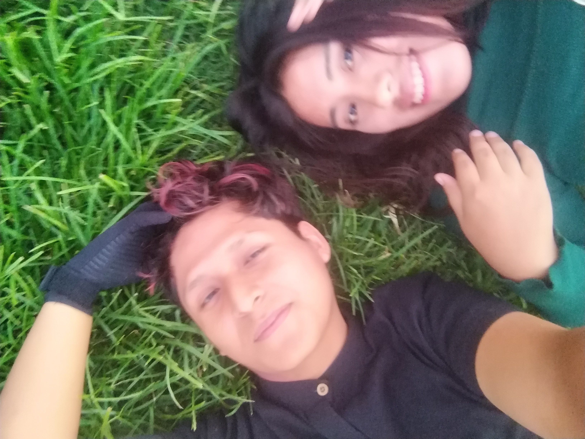
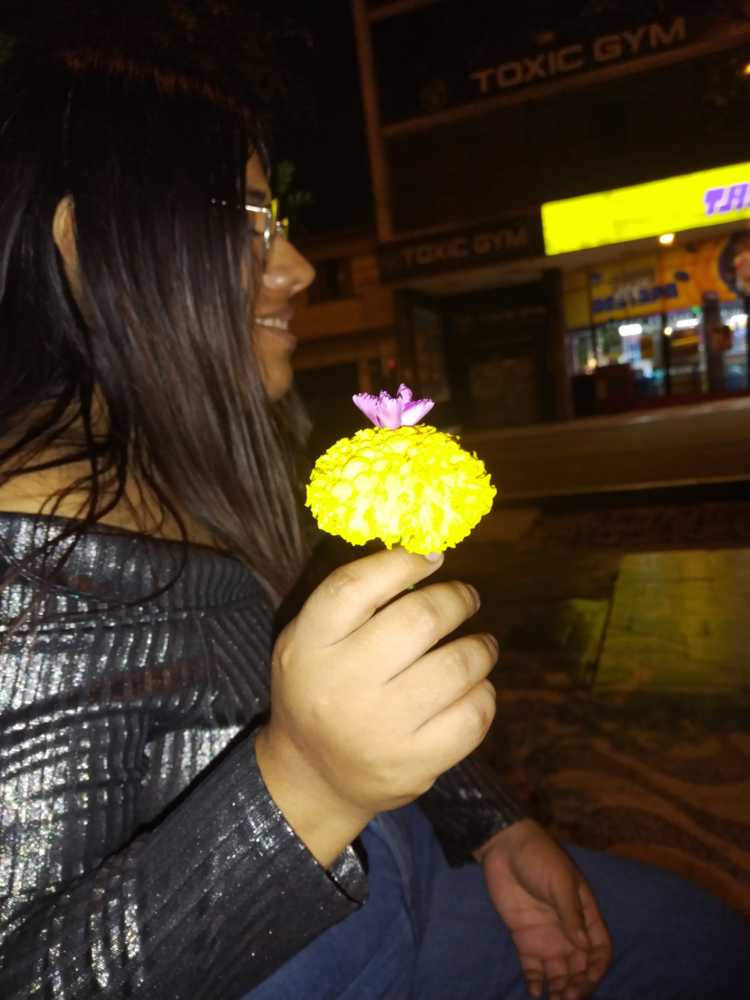
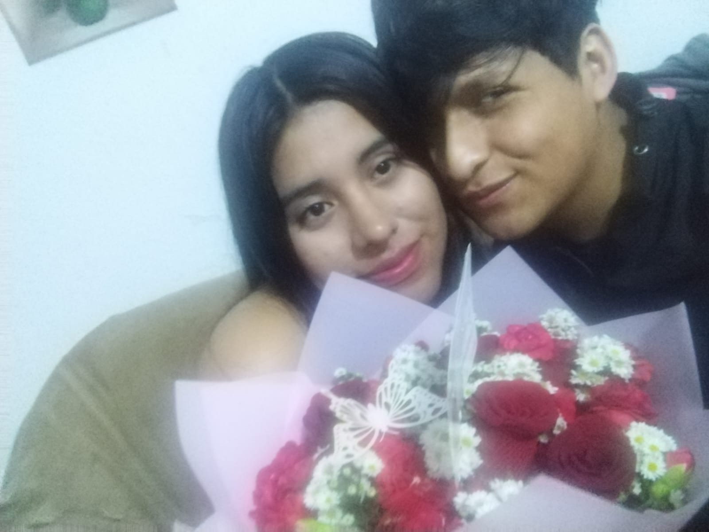
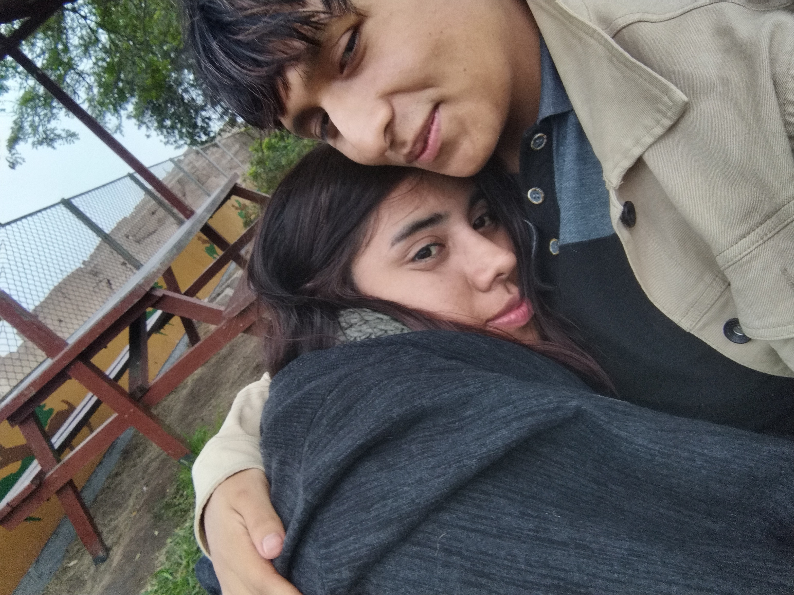

Poco a poco, sin darme cuenta, tus silencios empezaron a confiar en mí. Y de las cenizas de un corazón cansado, comenzaron a brotar pétalos nuevos, suaves, tímidos… pero llenos de vida.
Fue entonces cuando entendí que el amor no irrumpe, sino que espera.

Entre música, luces y latidos desordenados, llegó ese baile… el que sin saberlo unió nuestros corazones.
Yo temblaba, no por el frío, sino por el miedo dulce de no saber cómo reaccionarías.
Frente a mí tenía una obra de arte viva, y solo pude susurrarte, con el alma en la voz: “No podría estar en un mejor lugar.”

En un día creado para los enamorados, yo no puedo evitar pensarte.
Te invito a ser mi San Valentín, a compartir risas, cansancio bonito, un medio día construyendo sueños y una media noche bailando en Miraflores como si el mundo solo nos mirara a nosotros.
No prometo perfección, pero sí presencia, cariño sincero y un amor que elige quedarse.

Nos vemos mañana, mi dulce Chui.
Con un abrazo que no tenga prisa y un beso que confirme que esta historia recién comienza.
